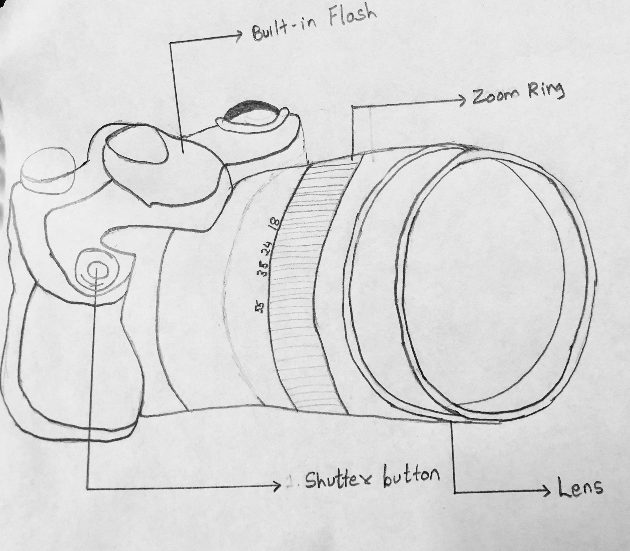
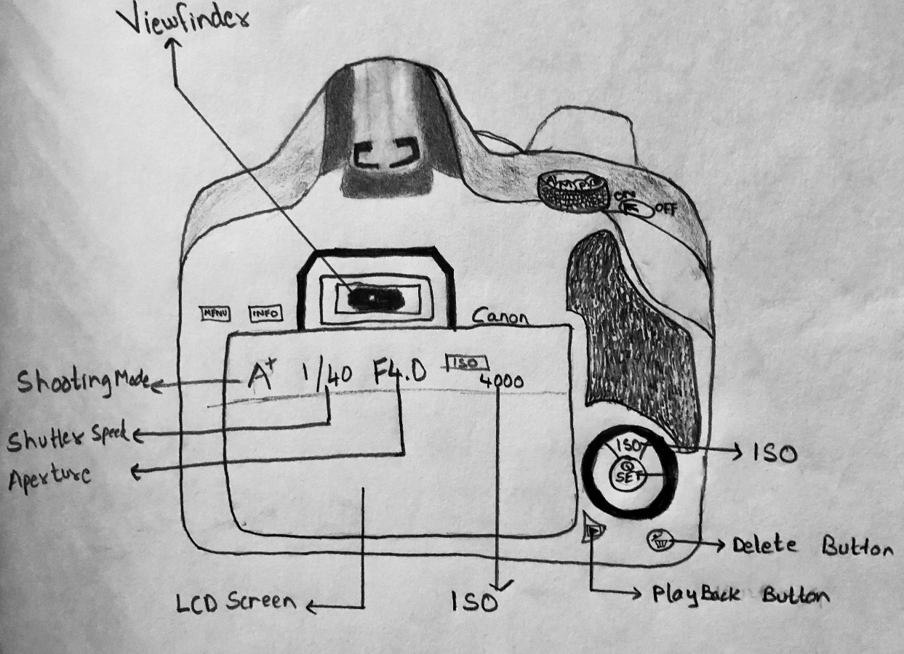
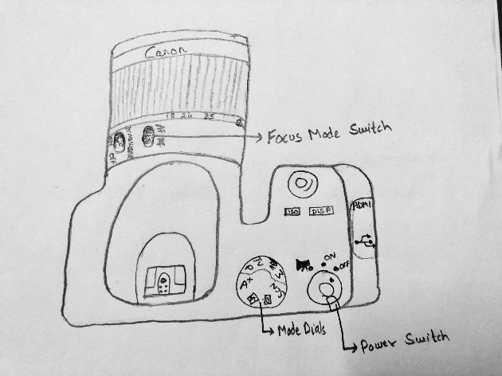
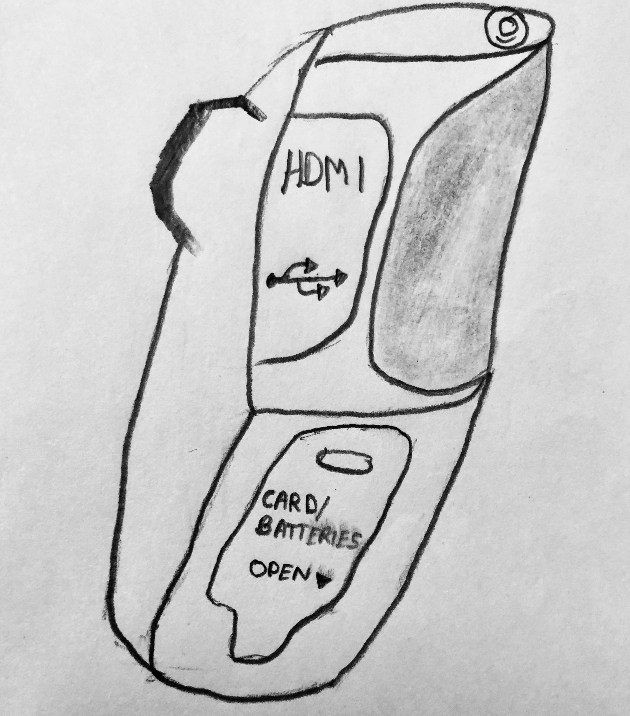

Each part of the camera is explained with respect to each face of the camera.
- Built in flash is used for nighttime photography
- Lens is the eye of the camera. You rotate the end of the lens to determine focus
- Focus is the area in the photo you want to be captured with best clarity
- Zoom ring helps the lens to zoom in or zoom out when rotated clockwise and anticlockwise respectively
- Shutter Button is the button to click to capture the photo

- Viewfinder is a small window to look through to compose photo
- Shooting Mode corresponds to the mode selected in Mode Dial
- Aperture and ISO determine the amount of allowed light/brightness on the photo
- Shutter speed is the time interval during which the shutter in lens is open
- Playback button displays the most recent photo

- Power switch operates on and off functionality of camera
- Mode dials determine the mode. For simplicity let's stick to Manual and Automatic
- Automatic means the camera controls, Aperture, ISO, Shutter speed whereas you have to control them in manual
- Focus Mode determine the mode for focus, automatic or manual

- Pull down the opening to retrive SD card for storage purposes or change batteries
- Pull on the HDMI opening to connect to HDMI cable
